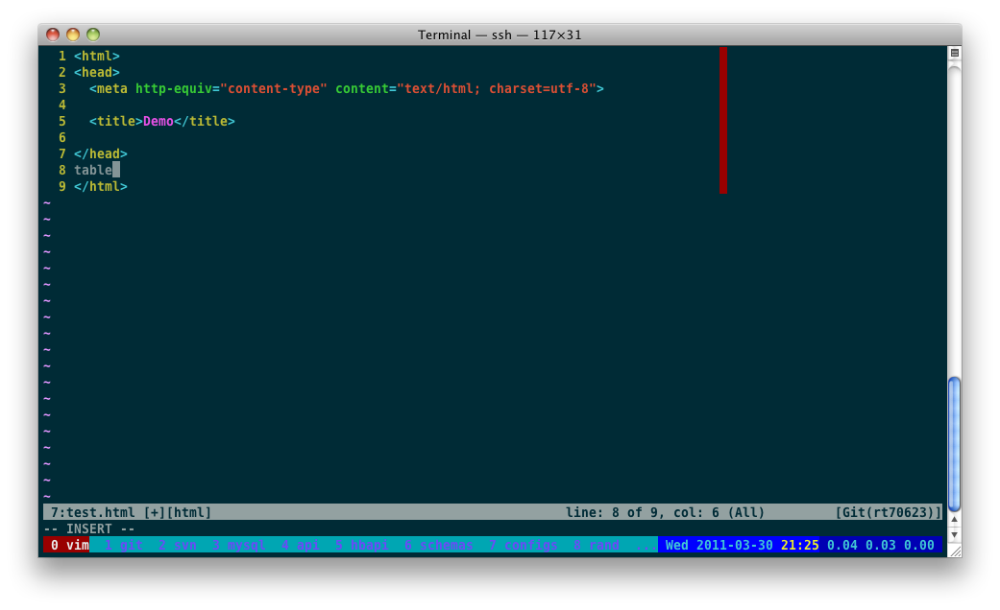

VIM & SCREEN

| space, → | next slide |
| ← | previous slide |
| d | debug mode |
| ## <ret> | go to slide # |
| c | table of contents (vi) |
| f | toggle footer |
| r | reload slides |
| z | toggle help (this) |
Screen is a full-screen window manager that
multiplexes a physical terminal between
several processes, typically interactive
shells.
vbell on
nethack on
vbell_msg ""
autodetach on
startup_message off
pow_detach_msg "Screen session of \$LOGNAME \$:cr:\$:nl:ended."
shell -$SHELL
msgminwait 3
hardstatus alwayslastline "%{.cb}%-W%{.rW}%50L> %n %t%{-}%+W%L<%-37=%{+b}%{.bc} %D %Y-%m-%d %{.bY}%c%{-b} %{.bc}%l "Vim is an advanced text editor that seeks
to provide the power of the de-facto Unix
editor 'Vi', with a more complete feature
set.

